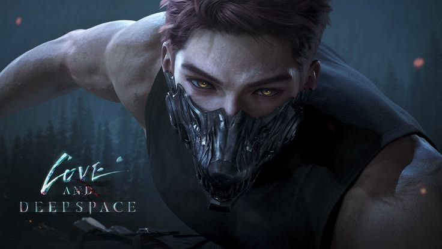

Kenapa Valko Dibatalkan? Kontroversi Terbesar di Love and Deepspace 🐺🥀
Dipublikasikan oleh: Admin •
Dunia game otome baru saja diguncang. Valko, karakter werewolf yang diumumkan sebagai love interest ke-6 Love and Deepspace pada 22 Juni 2026, dibatalkan permanen oleh Infold Games pada 30 Juni, hanya sekitar delapan hari setelah pengumuman dan sebelum sempat rilis di Version 6.0. Apa yang sebenarnya terjadi?

Gambar: © Infold Games (Papergames)
-
Desain yang Berbeda dari Lima Love Interest Lain
Berbeda dari Xavier, Zayne, Rafayel, Sylus, dan Caleb yang tampil manusiawi, Valko punya ciri werewolf jelas: telinga dan ekor serigala. Pemain global banyak yang antusias, tetapi reaksi negatif paling keras datang dari komunitas Tiongkok.
-
Masalah yang Lebih Dalam dari Sekadar Desain
Kemarahan pemain di Tiongkok sudah menumpuk sebelumnya karena update cerita utama dianggap lambat, sementara sumber daya dialihkan ke karakter baru. Kehadiran Valko menjadi pemicunya.
-
Isu Materi Promosi dan Penamaan
Siaran promosi menampilkan Valko masuk ke rumah perempuan yang tinggal sendiri dengan dialog tentang "membiarkan serigala masuk rumah". Banyak pemain menilainya tidak pantas, apalagi audiens game ini didominasi perempuan.
Sebagian netizen Tiongkok juga mengaitkan nama "Valko" dengan istilah Wokou (bajak laut Jepang historis). Padahal nama ini berasal dari kata Slavia yang berarti "serigala".
-
Tekanan yang Meningkat
Protes berlanjut sampai ke kantor Infold, dan Kementerian Keamanan Publik Tiongkok ikut mengeluarkan pernyataan kritis soal iklannya. Infold juga mundur dari BilibiliWorld 2026.
-
Keputusan Infold
Infold membatalkan Valko secara permanen, menyatakan tidak akan menambah love interest baru, dan berfokus pada cerita lima karakter yang ada. Pemain juga diberi kompensasi mata uang in-game selama 30 hari login.
-
Reaksi Pemain Global
Petisi "Bring Back Valko" menembus lebih dari 229 ribu tanda tangan, tetapi Infold tidak berubah pikiran.
💭 Kesimpulan
Kasus Valko menunjukkan betapa sulitnya mengelola game global dengan komunitas beragam. Keputusan tentang satu karakter bisa dipengaruhi tekanan lokal, perbedaan budaya, bahkan regulasi.
Menurutmu bagaimana? Kamu tim yang menantikan Valko atau setuju dengan keputusan Infold? Tulis di komentar ya! 💬🐺